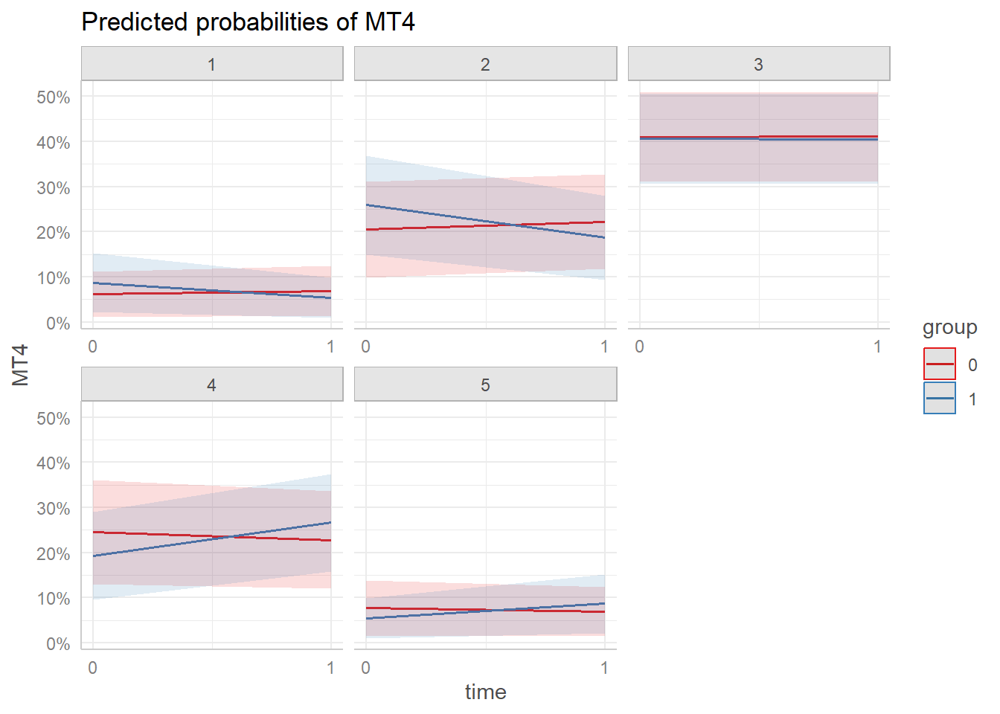
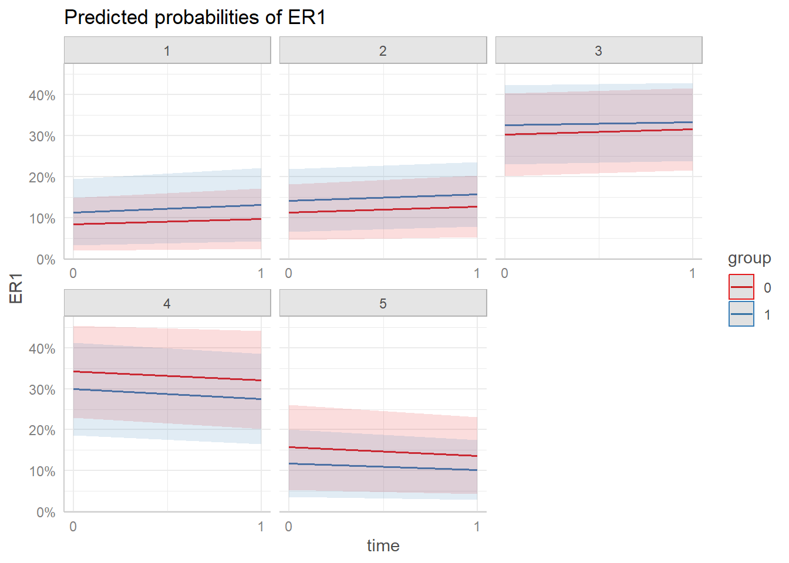

suppressPackageStartupMessages({
library(readxl)
library(gtsummary)
library(flextable)
library(ggeffects)
library(ggplot2)
library(dplyr)
library(tidyr)
library(reshape2)
library(stats)
library(ordinal)
library(texreg)
})
load("data/digital_distraction_data.RData")Preventing Digital Distractions in Secondary Classrooms: A Quasi-Experimental Study
Set-Up
Calculate Cronbach’s alpha
Code
calculate_alpha <- function(data, prefix) {
category_cols <- grep(paste0("^", prefix), colnames(data), value = TRUE)
alpha_result <- alpha(data[, category_cols])
cat(paste("Cronbach's alpha for", prefix, ":", format(alpha_result$total$raw_alpha, digits = 2, nsmall = 2)), "\n")
return(alpha_result)
}
data_filtered_pre <- data %>% filter(time == "0")
alpha_AI_pre <- calculate_alpha(data_filtered_pre, "AI")
alpha_OV_pre <- calculate_alpha(data_filtered_pre, "OV")
alpha_MT_pre <- calculate_alpha(data_filtered_pre, "MT")
alpha_ER_pre <- calculate_alpha(data_filtered_pre, "ER")
data_filtered_post <- data %>% filter(time == "1")
alpha_AI_post <- calculate_alpha(data_filtered_post, "AI")
alpha_OV_post <- calculate_alpha(data_filtered_post, "OV")
alpha_MT_post <- calculate_alpha(data_filtered_post, "MT")
alpha_ER_post <- calculate_alpha(data_filtered_post, "ER")Attention Impulsiveness (AI)
alpha_AI_pre$total$raw_alpha %>% round(2)[1] 0.7alpha_AI_post$total$raw_alpha %>% round(2)[1] 0.82Online Vigilance (OV)
alpha_OV_pre$total$raw_alpha %>% round(2)[1] 0.46alpha_OV_post$total$raw_alpha %>% round(2)[1] 0.58Multitasking (MT)
alpha_MT_pre$total$raw_alpha %>% round(2)[1] 0.63alpha_MT_post$total$raw_alpha %>% round(2)[1] 0.59Emotion Regulation (ER)
alpha_ER_pre$total$raw_alpha %>% round(2)[1] 0.83alpha_ER_post$total$raw_alpha %>% round(2)[1] 0.8Code
selected_data <- data %>% select(student, group, time, AI1:ER4)
long_data <- melt(selected_data, id.vars = c('student', 'group', 'time'), variable.name = 'question', value.name = 'response')
table <- long_data %>%
mutate(time = case_when(
time == "0" ~ "Pre-test",
time == "1" ~ "Post-test"
)) %>%
mutate(time = factor(time, levels = c("Pre-test", "Post-test"))) %>%
mutate(group = case_when(
group == "0" ~ "Control",
group == "1" ~ "Treatment"
)) %>%
group_by(question, group, time, response) %>%
summarise(Count = n(), .groups = 'drop') %>%
group_by(question, group, time) %>%
mutate(Percentage = Count / sum(Count) * 100) %>%
mutate(Freq_Percent = paste0(Count, " (", round(Percentage, 1), "%)")) %>%
select(-Count, -Percentage) %>%
pivot_wider(names_from = response, values_from = Freq_Percent, values_fill = list(Freq_Percent = "0 (0%)")) %>%
ungroup()
table_flex <- table %>%
flextable() %>%
merge_v(j = ~ question) %>%
merge_v(j = ~ group) %>%
theme_vanilla() %>%
autofit()table_flexquestion | group | time | 1 | 2 | 3 | 4 | 5 |
|---|---|---|---|---|---|---|---|
AI1 | Control | Pre-test | 5 (11.1%) | 8 (17.8%) | 11 (24.4%) | 16 (35.6%) | 5 (11.1%) |
Post-test | 8 (17.8%) | 6 (13.3%) | 10 (22.2%) | 17 (37.8%) | 4 (8.9%) | ||
Treatment | Pre-test | 2 (4.3%) | 5 (10.9%) | 15 (32.6%) | 16 (34.8%) | 8 (17.4%) | |
Post-test | 5 (10.9%) | 10 (21.7%) | 16 (34.8%) | 8 (17.4%) | 7 (15.2%) | ||
AI2 | Control | Pre-test | 8 (17.8%) | 14 (31.1%) | 11 (24.4%) | 8 (17.8%) | 4 (8.9%) |
Post-test | 8 (17.8%) | 12 (26.7%) | 12 (26.7%) | 10 (22.2%) | 3 (6.7%) | ||
Treatment | Pre-test | 3 (6.5%) | 7 (15.2%) | 11 (23.9%) | 17 (37%) | 8 (17.4%) | |
Post-test | 1 (2.2%) | 12 (26.1%) | 22 (47.8%) | 8 (17.4%) | 3 (6.5%) | ||
AI3 | Control | Pre-test | 16 (35.6%) | 16 (35.6%) | 4 (8.9%) | 6 (13.3%) | 3 (6.7%) |
Post-test | 19 (42.2%) | 10 (22.2%) | 10 (22.2%) | 5 (11.1%) | 1 (2.2%) | ||
Treatment | Pre-test | 8 (17.4%) | 19 (41.3%) | 13 (28.3%) | 3 (6.5%) | 3 (6.5%) | |
Post-test | 10 (21.7%) | 13 (28.3%) | 13 (28.3%) | 8 (17.4%) | 2 (4.3%) | ||
AI4 | Control | Pre-test | 21 (46.7%) | 11 (24.4%) | 3 (6.7%) | 6 (13.3%) | 4 (8.9%) |
Post-test | 19 (42.2%) | 8 (17.8%) | 8 (17.8%) | 6 (13.3%) | 4 (8.9%) | ||
Treatment | Pre-test | 21 (45.7%) | 15 (32.6%) | 5 (10.9%) | 4 (8.7%) | 1 (2.2%) | |
Post-test | 19 (41.3%) | 9 (19.6%) | 10 (21.7%) | 8 (17.4%) | 0 (0%) | ||
AI5 | Control | Pre-test | 14 (31.1%) | 16 (35.6%) | 7 (15.6%) | 5 (11.1%) | 3 (6.7%) |
Post-test | 14 (31.1%) | 10 (22.2%) | 11 (24.4%) | 8 (17.8%) | 2 (4.4%) | ||
Treatment | Pre-test | 8 (17.4%) | 15 (32.6%) | 15 (32.6%) | 5 (10.9%) | 3 (6.5%) | |
Post-test | 7 (15.2%) | 17 (37%) | 16 (34.8%) | 6 (13%) | 0 (0%) | ||
OV1 | Control | Pre-test | 21 (46.7%) | 6 (13.3%) | 7 (15.6%) | 6 (13.3%) | 5 (11.1%) |
Post-test | 20 (44.4%) | 6 (13.3%) | 10 (22.2%) | 8 (17.8%) | 1 (2.2%) | ||
Treatment | Pre-test | 15 (32.6%) | 14 (30.4%) | 5 (10.9%) | 9 (19.6%) | 3 (6.5%) | |
Post-test | 12 (26.1%) | 12 (26.1%) | 13 (28.3%) | 3 (6.5%) | 6 (13%) | ||
OV2 | Control | Pre-test | 17 (37.8%) | 11 (24.4%) | 7 (15.6%) | 5 (11.1%) | 5 (11.1%) |
Post-test | 15 (33.3%) | 8 (17.8%) | 11 (24.4%) | 8 (17.8%) | 3 (6.7%) | ||
Treatment | Pre-test | 12 (26.1%) | 12 (26.1%) | 10 (21.7%) | 11 (23.9%) | 1 (2.2%) | |
Post-test | 7 (15.2%) | 10 (21.7%) | 18 (39.1%) | 8 (17.4%) | 3 (6.5%) | ||
OV3 | Control | Pre-test | 37 (82.2%) | 5 (11.1%) | 1 (2.2%) | 2 (4.4%) | 0 (0%) |
Post-test | 37 (82.2%) | 5 (11.1%) | 3 (6.7%) | 0 (0%) | 0 (0%) | ||
Treatment | Pre-test | 35 (76.1%) | 6 (13%) | 1 (2.2%) | 2 (4.3%) | 2 (4.3%) | |
Post-test | 32 (69.6%) | 4 (8.7%) | 6 (13%) | 4 (8.7%) | 0 (0%) | ||
MT1 | Control | Pre-test | 11 (24.4%) | 14 (31.1%) | 9 (20%) | 6 (13.3%) | 5 (11.1%) |
Post-test | 9 (20%) | 15 (33.3%) | 8 (17.8%) | 7 (15.6%) | 6 (13.3%) | ||
Treatment | Pre-test | 7 (15.2%) | 14 (30.4%) | 13 (28.3%) | 8 (17.4%) | 4 (8.7%) | |
Post-test | 12 (26.1%) | 10 (21.7%) | 12 (26.1%) | 11 (23.9%) | 1 (2.2%) | ||
MT2 | Control | Pre-test | 8 (17.8%) | 2 (4.4%) | 8 (17.8%) | 17 (37.8%) | 10 (22.2%) |
Post-test | 4 (8.9%) | 7 (15.6%) | 8 (17.8%) | 16 (35.6%) | 10 (22.2%) | ||
Treatment | Pre-test | 4 (8.7%) | 7 (15.2%) | 17 (37%) | 12 (26.1%) | 6 (13%) | |
Post-test | 3 (6.5%) | 7 (15.2%) | 15 (32.6%) | 15 (32.6%) | 6 (13%) | ||
MT3 | Control | Pre-test | 14 (31.1%) | 11 (24.4%) | 8 (17.8%) | 4 (8.9%) | 8 (17.8%) |
Post-test | 8 (17.8%) | 8 (17.8%) | 12 (26.7%) | 14 (31.1%) | 3 (6.7%) | ||
Treatment | Pre-test | 11 (23.9%) | 12 (26.1%) | 9 (19.6%) | 9 (19.6%) | 5 (10.9%) | |
Post-test | 11 (23.9%) | 4 (8.7%) | 17 (37%) | 10 (21.7%) | 4 (8.7%) | ||
MT4 | Control | Pre-test | 8 (17.8%) | 7 (15.6%) | 13 (28.9%) | 8 (17.8%) | 9 (20%) |
Post-test | 4 (8.9%) | 12 (26.7%) | 15 (33.3%) | 8 (17.8%) | 6 (13.3%) | ||
Treatment | Pre-test | 6 (13%) | 11 (23.9%) | 16 (34.8%) | 10 (21.7%) | 3 (6.5%) | |
Post-test | 1 (2.2%) | 11 (23.9%) | 16 (34.8%) | 16 (34.8%) | 2 (4.3%) | ||
ER1 | Control | Pre-test | 7 (15.6%) | 3 (6.7%) | 12 (26.7%) | 13 (28.9%) | 10 (22.2%) |
Post-test | 9 (20%) | 8 (17.8%) | 6 (13.3%) | 10 (22.2%) | 12 (26.7%) | ||
Treatment | Pre-test | 7 (15.2%) | 7 (15.2%) | 12 (26.1%) | 13 (28.3%) | 7 (15.2%) | |
Post-test | 7 (15.2%) | 7 (15.2%) | 15 (32.6%) | 12 (26.1%) | 5 (10.9%) | ||
ER2 | Control | Pre-test | 11 (24.4%) | 8 (17.8%) | 9 (20%) | 6 (13.3%) | 11 (24.4%) |
Post-test | 12 (26.7%) | 6 (13.3%) | 8 (17.8%) | 10 (22.2%) | 9 (20%) | ||
Treatment | Pre-test | 9 (19.6%) | 9 (19.6%) | 7 (15.2%) | 13 (28.3%) | 8 (17.4%) | |
Post-test | 10 (21.7%) | 5 (10.9%) | 13 (28.3%) | 11 (23.9%) | 7 (15.2%) | ||
ER3 | Control | Pre-test | 7 (15.6%) | 9 (20%) | 5 (11.1%) | 14 (31.1%) | 10 (22.2%) |
Post-test | 8 (17.8%) | 7 (15.6%) | 8 (17.8%) | 16 (35.6%) | 6 (13.3%) | ||
Treatment | Pre-test | 8 (17.4%) | 7 (15.2%) | 9 (19.6%) | 17 (37%) | 5 (10.9%) | |
Post-test | 4 (8.7%) | 7 (15.2%) | 15 (32.6%) | 14 (30.4%) | 6 (13%) | ||
ER4 | Control | Pre-test | 13 (28.9%) | 5 (11.1%) | 11 (24.4%) | 10 (22.2%) | 6 (13.3%) |
Post-test | 8 (17.8%) | 7 (15.6%) | 8 (17.8%) | 11 (24.4%) | 11 (24.4%) | ||
Treatment | Pre-test | 7 (15.2%) | 7 (15.2%) | 8 (17.4%) | 12 (26.1%) | 12 (26.1%) | |
Post-test | 5 (10.9%) | 3 (6.5%) | 14 (30.4%) | 14 (30.4%) | 10 (21.7%) |
Estimated Minutes of Digital Distractions
Code
data <- data %>%
mutate(D3_cat = case_when(
D3 == "Less than 10 minutes" ~ "1",
D3 == "10-20 minutes" ~ "2",
D3 == "20-30 minutes" ~ "3",
D3 == "30-40 minutes" ~ "4",
D3 == "More than 40 minutes" ~ "5"
))
data <- data %>% mutate(across(c(D3_cat, AI1:ER4), as.factor))
main.D3_cat <- clmm(D3_cat ~ group + time + group:time +
(1 | student), data = data, Hess=TRUE, nAGQ=7)Code
sum <- summary(main.D3_cat)
cf <- sum$coefficients %>% as.data.frame()
cf[1:4, 1] <- cf[1:4, 1]*-1
cf[1:4, 3] <- cf[1:4, 3]*-1
rownames(cf)[1:4] <- c("4|5", "3|4", "2|3", "1|2")
cf %>% mutate(odd_ratio = exp(Estimate)) %>%
mutate_if(is.numeric, ~ round(., 3)) Estimate Std. Error z value Pr(>|z|) odd_ratio
4|5 2.175 0.451 4.824 0.000 8.800
3|4 -0.313 0.400 -0.783 0.433 0.731
2|3 -1.574 0.434 -3.627 0.000 0.207
1|2 -2.377 0.477 -4.984 0.000 0.093
group1 -1.000 0.533 -1.876 0.061 0.368
time -0.550 0.413 -1.333 0.182 0.577
group1:time -0.256 0.580 -0.441 0.659 0.774Code
ggpredict(main.D3_cat, terms = c("time", "group")) %>% plot() +
scale_x_continuous(breaks = c(0, 1)) 
Attention Impulsiveness (AI)
AI1
Code
main.AI1 <- clmm(AI1 ~ group + time + group:time +
(1 | student), data = data, Hess=TRUE, nAGQ=7)Code
sum <- summary(main.AI1)
cf <- sum$coefficients %>% as.data.frame()
cf[1:4, 1] <- cf[1:4, 1]*-1
cf[1:4, 3] <- cf[1:4, 3]*-1
rownames(cf)[1:4] <- c("4|5", "3|4", "2|3", "1|2")
cf %>% mutate(odd_ratio = exp(Estimate)) %>%
mutate_if(is.numeric, ~ round(., 3)) Estimate Std. Error z value Pr(>|z|) odd_ratio
4|5 2.927 0.497 5.893 0.000 18.663
3|4 1.376 0.411 3.344 0.001 3.958
2|3 -0.458 0.391 -1.170 0.242 0.633
1|2 -2.755 0.477 -5.777 0.000 0.064
group1 0.679 0.524 1.295 0.195 1.972
time -0.162 0.397 -0.409 0.682 0.850
group1:time -0.791 0.566 -1.396 0.163 0.453Code
ggpredict(main.AI1, terms = c("time", "group")) %>% plot() +
scale_x_continuous(breaks = c(0, 1)) 
AI2
Code
main.AI2 <- clmm(AI2 ~ group + time + group:time +
(1 | student), data = data, Hess=TRUE, nAGQ=7)Code
sum <- summary(main.AI2)
cf <- sum$coefficients %>% as.data.frame()
cf[1:4, 1] <- cf[1:4, 1]*-1
cf[1:4, 3] <- cf[1:4, 3]*-1
rownames(cf)[1:4] <- c("4|5", "3|4", "2|3", "1|2")
cf %>% mutate(odd_ratio = exp(Estimate)) %>%
mutate_if(is.numeric, ~ round(., 3)) Estimate Std. Error z value Pr(>|z|) odd_ratio
4|5 2.582 0.505 5.117 0.000 13.222
3|4 0.204 0.421 0.485 0.628 1.227
2|3 -1.894 0.465 -4.072 0.000 0.150
1|2 -4.091 0.582 -7.025 0.000 0.017
group1 1.860 0.590 3.154 0.002 6.425
time 0.176 0.405 0.434 0.664 1.193
group1:time -1.235 0.583 -2.118 0.034 0.291Code
ggpredict(main.AI2, terms = c("time", "group")) %>% plot() +
scale_x_continuous(breaks = c(0, 1)) AI3
Code
main.AI3 <- clmm(AI3 ~ group + time + group:time +
(1 | student), data = data, Hess=TRUE, nAGQ=7)Code
sum <- summary(main.AI3)
cf <- sum$coefficients %>% as.data.frame()
cf[1:4, 1] <- cf[1:4, 1]*-1
cf[1:4, 3] <- cf[1:4, 3]*-1
rownames(cf)[1:4] <- c("4|5", "3|4", "2|3", "1|2")
cf %>% mutate(odd_ratio = exp(Estimate)) %>%
mutate_if(is.numeric, ~ round(., 3)) Estimate Std. Error z value Pr(>|z|) odd_ratio
4|5 1.138 0.500 2.276 0.023 3.121
3|4 -1.375 0.520 -2.644 0.008 0.253
2|3 -3.327 0.608 -5.467 0.000 0.036
1|2 -5.245 0.738 -7.104 0.000 0.005
group1 0.871 0.656 1.328 0.184 2.389
time -0.249 0.444 -0.560 0.575 0.780
group1:time 0.508 0.605 0.840 0.401 1.662Code
ggpredict(main.AI3, terms = c("time", "group")) %>% plot() +
scale_x_continuous(breaks = c(0, 1)) AI4
Code
main.AI4 <- clmm(AI4 ~ group + time + group:time +
(1 | student), data = data, Hess=TRUE, nAGQ=7)Code
sum <- summary(main.AI4)
cf <- sum$coefficients %>% as.data.frame()
cf[1:4, 1] <- cf[1:4, 1]*-1
cf[1:4, 3] <- cf[1:4, 3]*-1
rownames(cf)[1:4] <- c("4|5", "3|4", "2|3", "1|2")
cf %>% mutate(odd_ratio = exp(Estimate)) %>%
mutate_if(is.numeric, ~ round(., 3)) Estimate Std. Error z value Pr(>|z|) odd_ratio
4|5 0.527 0.457 1.152 0.249 1.694
3|4 -1.025 0.471 -2.176 0.030 0.359
2|3 -2.287 0.521 -4.389 0.000 0.102
1|2 -4.603 0.744 -6.184 0.000 0.010
group1 -0.497 0.621 -0.801 0.423 0.608
time 0.346 0.440 0.786 0.432 1.413
group1:time 0.156 0.611 0.255 0.798 1.169Code
ggpredict(main.AI4, terms = c("time", "group")) %>% plot() +
scale_x_continuous(breaks = c(0, 1)) AI5
Code
main.AI5 <- clmm(AI5 ~ group + time + group:time +
(1 | student), data = data, Hess=TRUE, nAGQ=7)Code
sum <- summary(main.AI5)
cf <- sum$coefficients %>% as.data.frame()
cf[1:4, 1] <- cf[1:4, 1]*-1
cf[1:4, 3] <- cf[1:4, 3]*-1
rownames(cf)[1:4] <- c("4|5", "3|4", "2|3", "1|2")
cf %>% mutate(odd_ratio = exp(Estimate)) %>%
mutate_if(is.numeric, ~ round(., 3)) Estimate Std. Error z value Pr(>|z|) odd_ratio
4|5 1.187 0.413 2.877 0.004 3.276
3|4 -0.861 0.413 -2.086 0.037 0.423
2|3 -2.706 0.488 -5.541 0.000 0.067
1|2 -4.593 0.638 -7.196 0.000 0.010
group1 0.840 0.538 1.561 0.118 2.317
time 0.495 0.421 1.176 0.240 1.641
group1:time -0.716 0.577 -1.241 0.214 0.489Code
ggpredict(main.AI5, terms = c("time", "group")) %>% plot() +
scale_x_continuous(breaks = c(0, 1)) 
Online Vigilance (OV)
OV1
Code
main.OV1 <- clmm(OV1 ~ group + time + group:time +
(1 | student), data = data, Hess=TRUE, nAGQ=7)Code
sum <- summary(main.OV1)
cf <- sum$coefficients %>% as.data.frame()
cf[1:4, 1] <- cf[1:4, 1]*-1
cf[1:4, 3] <- cf[1:4, 3]*-1
rownames(cf)[1:4] <- c("4|5", "3|4", "2|3", "1|2")
cf %>% mutate(odd_ratio = exp(Estimate)) %>%
mutate_if(is.numeric, ~ round(., 3)) Estimate Std. Error z value Pr(>|z|) odd_ratio
4|5 0.611 0.489 1.249 0.212 1.842
3|4 -0.932 0.504 -1.850 0.064 0.394
2|3 -2.470 0.557 -4.436 0.000 0.085
1|2 -4.237 0.662 -6.395 0.000 0.014
group1 0.414 0.648 0.639 0.523 1.512
time -0.151 0.449 -0.336 0.737 0.860
group1:time 0.529 0.609 0.870 0.385 1.698Code
ggpredict(main.OV1, terms = c("time", "group")) %>% plot() +
scale_x_continuous(breaks = c(0, 1)) 
OV2
Code
main.OV2 <- clmm(OV2 ~ group + time + group:time +
(1 | student), data = data, Hess=TRUE, nAGQ=7)Code
sum <- summary(main.OV2 )
cf <- sum$coefficients %>% as.data.frame()
cf[1:4, 1] <- cf[1:4, 1]*-1
cf[1:4, 3] <- cf[1:4, 3]*-1
rownames(cf)[1:4] <- c("4|5", "3|4", "2|3", "1|2")
cf %>% mutate(odd_ratio = exp(Estimate)) %>%
mutate_if(is.numeric, ~ round(., 3)) Estimate Std. Error z value Pr(>|z|) odd_ratio
4|5 1.435 0.594 2.415 0.016 4.200
3|4 -0.657 0.592 -1.110 0.267 0.518
2|3 -2.992 0.666 -4.495 0.000 0.050
1|2 -5.800 0.861 -6.735 0.000 0.003
group1 0.525 0.779 0.675 0.500 1.691
time 0.373 0.449 0.830 0.407 1.452
group1:time 0.328 0.616 0.533 0.594 1.389Code
ggpredict(main.OV2, terms = c("time", "group")) %>% plot() +
scale_x_continuous(breaks = c(0, 1)) 
OV3
Code
main.OV3 <- clmm(OV3 ~ group + time + group:time +
(1 | student), data = data, Hess=TRUE, nAGQ=7)Code
sum <- summary(main.OV3 )
cf <- sum$coefficients %>% as.data.frame()
cf[1:4, 1] <- cf[1:4, 1]*-1
cf[1:4, 3] <- cf[1:4, 3]*-1
rownames(cf)[1:4] <- c("4|5", "3|4", "2|3", "1|2")
cf %>% mutate(odd_ratio = exp(Estimate)) %>%
mutate_if(is.numeric, ~ round(., 3)) Estimate Std. Error z value Pr(>|z|) odd_ratio
4|5 -2.418 0.662 -3.649 0.000 0.089
3|4 -3.627 0.767 -4.727 0.000 0.027
2|3 -4.797 0.901 -5.323 0.000 0.008
1|2 -6.868 1.246 -5.513 0.000 0.001
group1 0.654 0.767 0.853 0.394 1.923
time -0.121 0.629 -0.193 0.847 0.886
group1:time 0.594 0.834 0.712 0.477 1.810Code
ggpredict(main.OV3, terms = c("time", "group")) %>% plot() +
scale_x_continuous(breaks = c(0, 1)) 
Multitasking (MT)
MT1
Code
main.MT1 <- clmm(MT1 ~ group + time + group:time +
(1 | student), data = data, Hess=TRUE, nAGQ=7)Code
sum <- summary(main.MT1)
cf <- sum$coefficients %>% as.data.frame()
cf[1:4, 1] <- cf[1:4, 1]*-1
cf[1:4, 3] <- cf[1:4, 3]*-1
rownames(cf)[1:4] <- c("4|5", "3|4", "2|3", "1|2")
cf %>% mutate(odd_ratio = exp(Estimate)) %>%
mutate_if(is.numeric, ~ round(., 3)) Estimate Std. Error z value Pr(>|z|) odd_ratio
4|5 1.793 0.436 4.108 0.000 6.007
3|4 -0.070 0.401 -0.173 0.862 0.933
2|3 -1.611 0.433 -3.721 0.000 0.200
1|2 -3.515 0.557 -6.307 0.000 0.030
group1 0.363 0.533 0.682 0.496 1.438
time 0.277 0.407 0.681 0.496 1.319
group1:time -0.698 0.565 -1.235 0.217 0.498Code
ggpredict(main.MT1, terms = c("time", "group")) %>% plot() +
scale_x_continuous(breaks = c(0, 1)) 
MT2
Code
main.MT2 <- clmm(MT2 ~ group + time + group:time +
(1 | student), data = data, Hess=TRUE, nAGQ=7)Code
sum <- summary(main.MT2)
cf <- sum$coefficients %>% as.data.frame()
cf[1:4, 1] <- cf[1:4, 1]*-1
cf[1:4, 3] <- cf[1:4, 3]*-1
rownames(cf)[1:4] <- c("4|5", "3|4", "2|3", "1|2")
cf %>% mutate(odd_ratio = exp(Estimate)) %>%
mutate_if(is.numeric, ~ round(., 3)) Estimate Std. Error z value Pr(>|z|) odd_ratio
4|5 4.267 0.691 6.178 0.000 71.340
3|4 2.589 0.596 4.341 0.000 13.322
2|3 0.325 0.530 0.613 0.540 1.385
1|2 -2.632 0.588 -4.480 0.000 0.072
group1 -0.714 0.703 -1.016 0.310 0.490
time 0.062 0.437 0.142 0.887 1.064
group1:time 0.187 0.597 0.313 0.754 1.205Code
ggpredict(main.MT2, terms = c("time", "group")) %>% plot() +
scale_x_continuous(breaks = c(0, 1)) 
MT3
Code
main.MT3 <- clmm(MT3 ~ group + time + group:time +
(1 | student), data = data, Hess=TRUE, nAGQ=7)Code
sum <- summary(main.MT3)
cf <- sum$coefficients %>% as.data.frame()
cf[1:4, 1] <- cf[1:4, 1]*-1
cf[1:4, 3] <- cf[1:4, 3]*-1
rownames(cf)[1:4] <- c("4|5", "3|4", "2|3", "1|2")
cf %>% mutate(odd_ratio = exp(Estimate)) %>%
mutate_if(is.numeric, ~ round(., 3)) Estimate Std. Error z value Pr(>|z|) odd_ratio
4|5 1.452 0.448 3.238 0.001 4.272
3|4 0.068 0.429 0.157 0.875 1.070
2|3 -1.632 0.464 -3.521 0.000 0.195
1|2 -3.563 0.565 -6.308 0.000 0.028
group1 0.275 0.574 0.479 0.632 1.316
time 0.715 0.411 1.741 0.082 2.044
group1:time -0.504 0.572 -0.881 0.378 0.604Code
ggpredict(main.MT3, terms = c("time", "group")) %>% plot() +
scale_x_continuous(breaks = c(0, 1)) MT4
Code
main.MT4 <- clmm(MT4 ~ group + time + group:time +
(1 | student), data = data, Hess=TRUE, nAGQ=7)Code
sum <- summary(main.MT4)
cf <- sum$coefficients %>% as.data.frame()
cf[1:4, 1] <- cf[1:4, 1]*-1
cf[1:4, 3] <- cf[1:4, 3]*-1
rownames(cf)[1:4] <- c("4|5", "3|4", "2|3", "1|2")
cf %>% mutate(odd_ratio = exp(Estimate)) %>%
mutate_if(is.numeric, ~ round(., 3)) Estimate Std. Error z value Pr(>|z|) odd_ratio
4|5 2.724 0.446 6.111 0.000 15.243
3|4 1.011 0.370 2.731 0.006 2.747
2|3 -0.740 0.365 -2.027 0.043 0.477
1|2 -2.486 0.441 -5.637 0.000 0.083
group1 -0.377 0.468 -0.806 0.420 0.686
time -0.125 0.403 -0.309 0.758 0.883
group1:time 0.639 0.552 1.158 0.247 1.895Code
ggpredict(main.MT4, terms = c("time", "group")) %>% plot() +
scale_x_continuous(breaks = c(0, 1)) Emotion Regulation (ER)
ER1
Code
main.ER1 <- clmm(ER1 ~ group + time + group:time +
(1 | student), data = data, Hess=TRUE, nAGQ=7)Code
sum <- summary(main.ER1)
cf <- sum$coefficients %>% as.data.frame()
cf[1:4, 1] <- cf[1:4, 1]*-1
cf[1:4, 3] <- cf[1:4, 3]*-1
rownames(cf)[1:4] <- c("4|5", "3|4", "2|3", "1|2")
cf %>% mutate(odd_ratio = exp(Estimate)) %>%
mutate_if(is.numeric, ~ round(., 3)) Estimate Std. Error z value Pr(>|z|) odd_ratio
4|5 2.383 0.424 5.616 0.000 10.841
3|4 1.397 0.381 3.665 0.000 4.043
2|3 -0.004 0.354 -0.012 0.990 0.996
1|2 -1.679 0.398 -4.219 0.000 0.187
group1 -0.330 0.475 -0.694 0.488 0.719
time -0.164 0.402 -0.409 0.683 0.848
group1:time -0.006 0.553 -0.012 0.991 0.994Code
ggpredict(main.ER1, terms = c("time", "group")) %>% plot() +
scale_x_continuous(breaks = c(0, 1)) ER2
Code
main.ER2 <- clmm(ER2 ~ group + time + group:time +
(1 | student), data = data, Hess=TRUE, nAGQ=7)Code
sum <- summary(main.ER2)
cf <- sum$coefficients %>% as.data.frame()
cf[1:4, 1] <- cf[1:4, 1]*-1
cf[1:4, 3] <- cf[1:4, 3]*-1
rownames(cf)[1:4] <- c("4|5", "3|4", "2|3", "1|2")
cf %>% mutate(odd_ratio = exp(Estimate)) %>%
mutate_if(is.numeric, ~ round(., 3)) Estimate Std. Error z value Pr(>|z|) odd_ratio
4|5 2.009 0.499 4.029 0.000 7.455
3|4 0.788 0.466 1.690 0.091 2.198
2|3 -0.623 0.467 -1.335 0.182 0.536
1|2 -2.428 0.524 -4.637 0.000 0.088
group1 0.105 0.615 0.171 0.864 1.111
time -0.049 0.424 -0.115 0.909 0.953
group1:time -0.009 0.583 -0.015 0.988 0.991Code
ggpredict(main.ER2, terms = c("time", "group")) %>% plot() +
scale_x_continuous(breaks = c(0, 1)) 
ER3
Code
main.ER3 <- clmm(ER3 ~ group + time + group:time +
(1 | student), data = data, Hess=TRUE, nAGQ=7)Code
sum <- summary(main.ER3)
cf <- sum$coefficients %>% as.data.frame()
cf[1:4, 1] <- cf[1:4, 1]*-1
cf[1:4, 3] <- cf[1:4, 3]*-1
rownames(cf)[1:4] <- c("4|5", "3|4", "2|3", "1|2")
cf %>% mutate(odd_ratio = exp(Estimate)) %>%
mutate_if(is.numeric, ~ round(., 3)) Estimate Std. Error z value Pr(>|z|) odd_ratio
4|5 2.807 0.499 5.621 0.000 16.560
3|4 1.436 0.448 3.205 0.001 4.204
2|3 0.085 0.428 0.200 0.842 1.089
1|2 -2.515 0.503 -5.000 0.000 0.081
group1 -0.330 0.563 -0.586 0.558 0.719
time -0.209 0.414 -0.506 0.613 0.811
group1:time 0.491 0.571 0.861 0.389 1.634Code
ggpredict(main.ER3, terms = c("time", "group")) %>% plot() +
scale_x_continuous(breaks = c(0, 1)) 
ER4
Code
main.ER4 <- clmm(ER4 ~ group + time + group:time +
(1 | student), data = data, Hess=TRUE, nAGQ=7)Code
sum <- summary(main.ER4)
cf <- sum$coefficients %>% as.data.frame()
cf[1:4, 1] <- cf[1:4, 1]*-1
cf[1:4, 3] <- cf[1:4, 3]*-1
rownames(cf)[1:4] <- c("4|5", "3|4", "2|3", "1|2")
cf %>% mutate(odd_ratio = exp(Estimate)) %>%
mutate_if(is.numeric, ~ round(., 3)) Estimate Std. Error z value Pr(>|z|) odd_ratio
4|5 1.691 0.493 3.432 0.001 5.427
3|4 0.548 0.462 1.185 0.236 1.729
2|3 -1.077 0.470 -2.290 0.022 0.341
1|2 -3.041 0.546 -5.568 0.000 0.048
group1 1.136 0.623 1.824 0.068 3.113
time 0.876 0.426 2.057 0.040 2.402
group1:time -0.712 0.586 -1.214 0.225 0.491Code
ggpredict(main.ER4, terms = c("time", "group")) %>% plot() +
scale_x_continuous(breaks = c(0, 1))